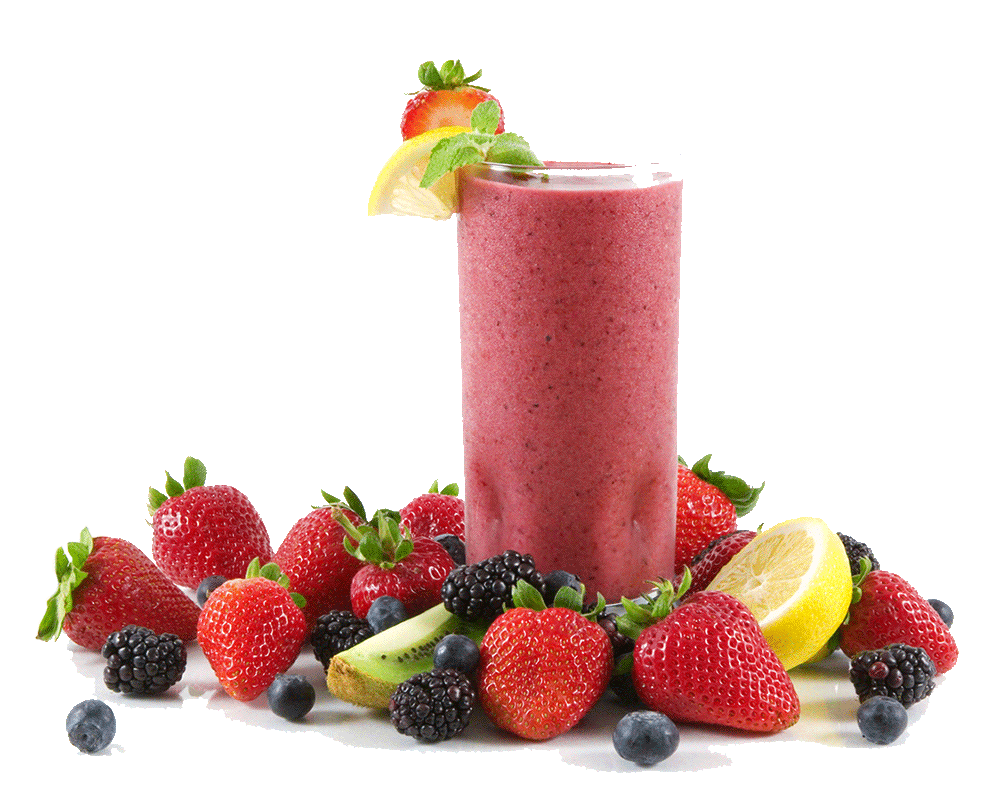

Smoothie
7 minutes
-
856 Likes
Creamy and delicate strenghtening smoothie made of strawberries, lime and oranges. A very refreshing drink, Delicious and sweet thanks to the combination of fruits.
Strawberry
5 piecesStrawberries are powerful teeth whiteners. They contain Vitamin C which helps fight plaque.
Lime
1 piecesLimes are loaded with Vitamin C and dietary fiber. They contain very little natural sugar.